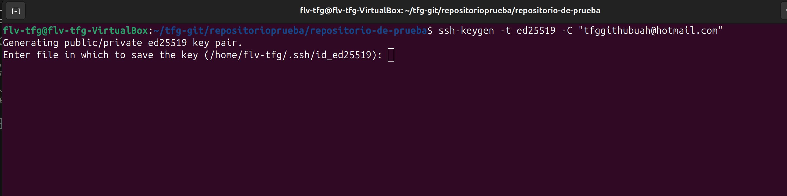
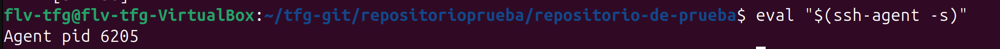
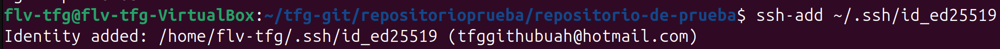
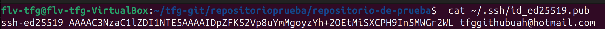
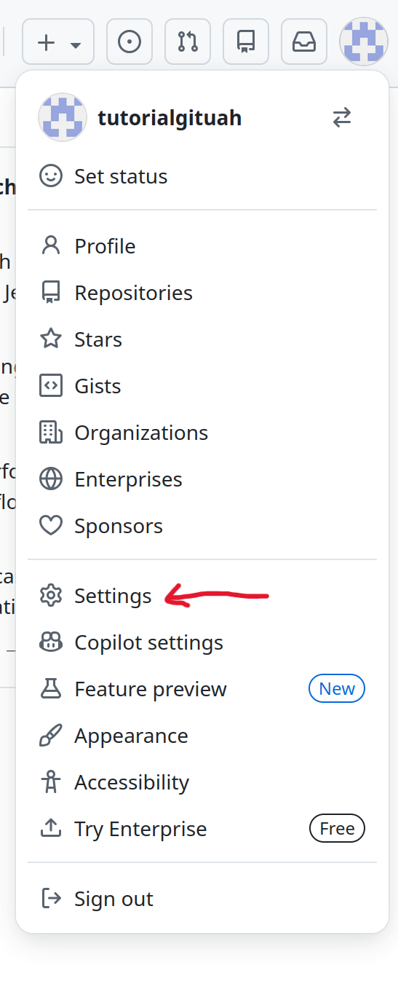
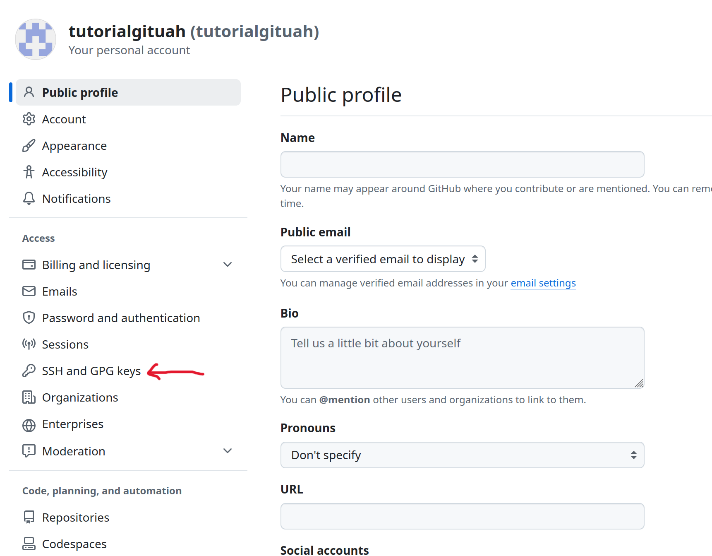
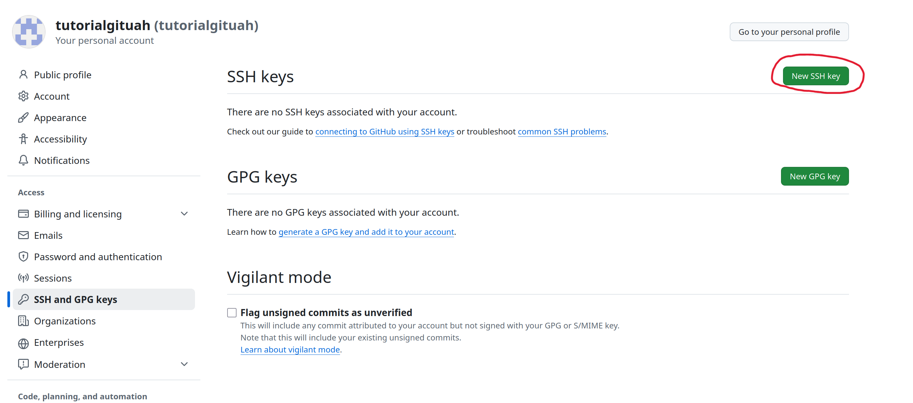
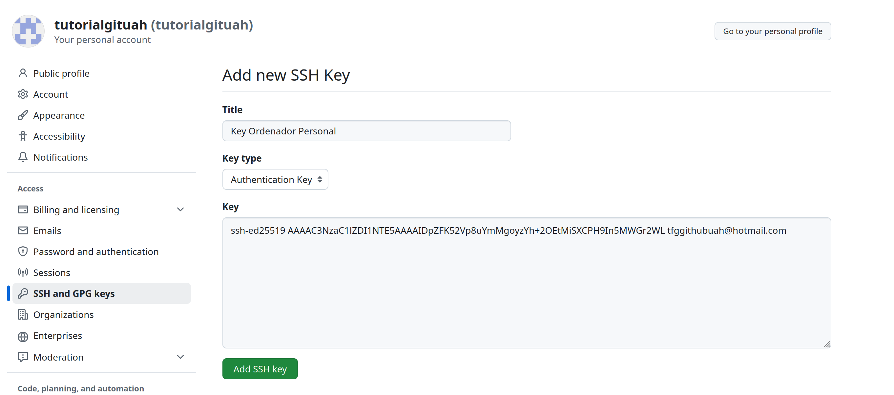
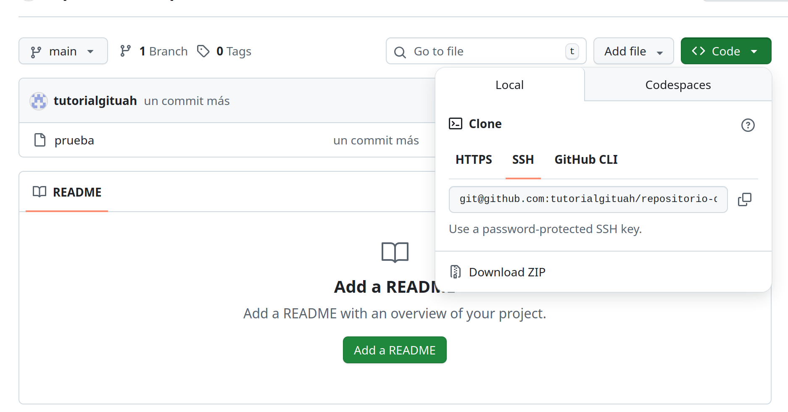
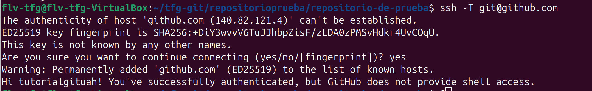

Clave SSHPuedes acceder y escribir datos en repositorios de GitHub.com mediante SSH (protocolo Secure Shell). Al conectarse a través de SSH, se realiza la autenticación mediante un archivo de clave privada en el equipo local. De esta forma no tienes que escribir la cuenta cada vez que quieras modificar algo en tu repositorio

En el terminal escribimos lo siguiente:
ssh-keygen -t ed25519-sk -C "tucorreo@correodegit.com"
Cambiando el correo escrito por el tuyo que uses en github. Te pedirá una "passphrase" es una contraseña para hacer la clave segura, como es tu ordenador personal puedes darlea intro cuando te la pida una vez y la sigueinte de confirmación.
Ahora hemos de iniciar el agente ssh en segundo plano escribiendo el siguiente comando:
eval "$(ssh-agent -s)"

Agregamos la llave privada SSH al ssh-agent escribiendo el siguiente comando:
ssh-add ~/.ssh/id_ed25519

Ahora hay que copiar la clave generada para poder escribirla en github, para ello escribe lo siguiente en el terminal:
cat ~/.ssh/id_ed25519.pub
Y copia desde "ssh-ed.." hasta tu correo, incluido. Tal como ves en la captura.
Entramos en la página de github y hacemos click en nuestro perfil para darle a ajustes tal como está marcado en la captura de pantalla

Habiendo entrado en ajustes, le damos a "SSH and GPG Keys" tal y como se ve en la captura. Está localizado en el panel izquierdo.

Hacemos click en "New SSH Key"

Le damos nombre a la Key para saber cual es en caso de tener varias en algún momento, la "key type" la dejamos en "Authentication Key" y en "Key" copiamos la clave previamente copiada en el portapapeles con el comando:
cat ~/.ssh/id_ed25519.pub
Y hacemos click en "Add SSH Key"
Como previamente, clonamos el repositorio por HTTPS necesitamos cambiarlo a SSH, para ello copiamos el enlace SSH de la página del repositorio dentro de la web de github.

Ahora, podemos escribir lo siguiente en el terminal (recordad que lo que sigue a "origin" es algo diferente ya que es vuestro repositorio):
git remote set-url origin git@github.com:propietariodelrepo/nombredelrepositorio.git